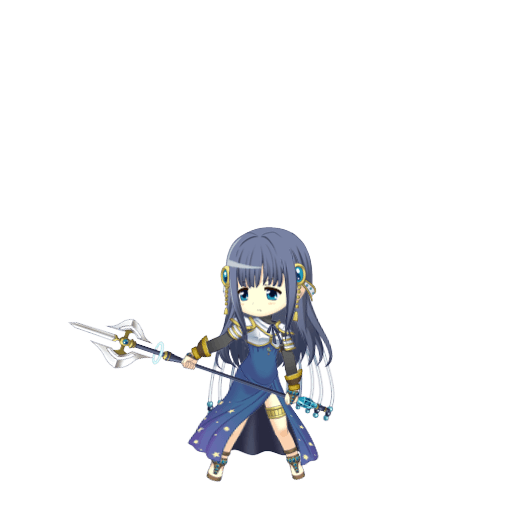

A magical girl who has been battling witches in Kamihama City for seven years. She is an expert on Kamihama City and magical girls. She works alone and doesn't associate with others. She documents all of Kamihama City's Rumors. “If you've learned your lesson, just stop. Life as a magical girl is no picnic."
The Doppel of ticket-taking. Its form is a ticket puncher. The master of this emotion dreams of the day when she, too, will depart on a journey, following in the footsteps of the friends whose departures she has already seen off. This Doppel can summon various illusions with the light of the lantern hanging from its tail, and those injured by its tail’s pincer are said to be guaranteed great misfortune in the near future. Because the range of emotional fluctuation is reduced in older individuals and in those who have lived as Puella Magi for a long time, those individuals’ Doppels may fail to completely separate from the master’s body, as is the case here.
| STATS | HP | ATK | DEF |
|---|---|---|---|
| Initial | 3630 | 1164 | 1211 |
| Max at ★2 | 11376 | 3673 | 4008 |
| Max at ★3 | 14406 | 4655 | 5082 |
| Max at ★4 | 18948 | 6123 | 6695 |
| Max at ★5 | 23479 | 7588 | 8316 |
★2: Blast Damage UP [III] & Probability Critical [III]
★3: Blast Damage UP [V] & Probability Critical [V]
★4: Blast Damage UP [VII] & Probability Critical [VII]
★5: Blast Damage UP [IX] & Probability Critical [IX] & Restore HP to Iroha
★2: Damage to all enemies [I] & Blast Damage UP (All / 3 T)
★3: Damage to all enemies [III] & Blast Damage UP (All / 3 T)
★4: Damage to all enemies [V] & Blast Damage UP (All / 3 T) & Attack UP (Self / 3 T)
★5: Damage to all enemies [VII] & Blast Damage UP (All / 3 T) & Attack UP (All / 3 T)
Damage to all enemies [IX] & Blast Damage UP (All / 3 T) & Attack UP (All / 3 T)